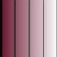

|  | GlassShape
UK Glass Shutters for sash windows |
Glass
Shutters on |
| The measurements should be
entered into the Glass
Shutters input screen as
shown. All measurements should be in
millimetres and values for all the boxes
should be supplied. If a value is not
required due to the style of the window, it
should be entered as zero. The window should be given a unique name to identify it within the property. When you run the program, the script file will be stored in: Documents\Glass
Shutters\scr\
and an audit file will be stored
in:Documents\Glass
Shutters\audit\
To run the script in DraftSight, use Tools/Run Script. This will generate the drawing and store it in DWG format in: Documents\Glass
Shutters\dwg\
If you require the drawing in a different format, use File/Save As. You may wish to set the DraftSight default "Save As" type to you preferred format. The drawing will be a flipped image suitable for projecting onto the coated side of the glass. The maximum allowed out of plumb of the batten slips is 6mm and the depth of the notches for the hinges will be adjusted to accommodate this. Android Version In the Android version, the script file will be stored in: storage/sdcard0/Glass
Shutters/mcr/
and an audit file will be stored in: storage/sdcard0/Glass
Shutters/audit/
To run the script in DraftSight, use Tools/Run Script and select the Macro (*.mcr) type. This will generate the drawing and store it in DWG format in: C:\Users\Public\Documents\Glass
Shutters\dwg\
Copyright © 2013, 2014, 2015 Donald G Gray |